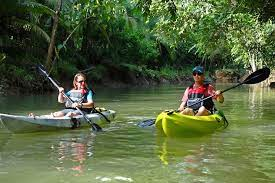

Adventure & Sports
Costa Rica is a thrill-seeker’s paradise. Go zip-lining through the Monteverde cloud forests, white-water rafting on the Pacuare River, or surfing the legendary waves of Tamarindo. Whether you're hiking a volcano or rappelling down a waterfall, adrenaline is guaranteed.
horseback riding →

zip line →
hiking →
diving →

kayaking →